Kit #ANT-7202 MSRP $69.95
Images and text Copyright � 2006 by Gary Buchanan
Antares 1/72 Junker Ju-488
Kit #ANT-7202
MSRP $69.95
Images and text Copyright � 2006 by Gary Buchanan
History
The protracted development of the He 177 coupled with the failure of Heinkel to eradicate many of its serious short comings led the Junkers design bureau to propose a relatively simple means of developing a strategic bomber with a minimum amount of disturbance to existing designs and production lines. Their proposal was a heavy four-engined bomber that would adapt components of the Ju 188, 288 and 388. This was to be composed of the complete forward fuselage and wings of the 388K, the center and aft fuselage of the 188, the wooden ventral pannier of the Ju 388K and the tail assembly of the 288C, married to a new wing center section carrying an additional pair of engines. It was to be powered by four BMW 801TJ 14-cylinder air-cooled radials rated at 1,800 hp. While the proposal certainly was viable and could have led to quick way to produce a long range heavy bomber to even consider it at the late stage of the war with resources in a critical situation borders on the ridiculous. The fuselages for the first two prototypes were being assembled at Junkers plant in Toulouse, France. Before all the parts were received to finish them, French saboteurs managed to damage the fuselages beyond repair. Before assembly could start on the next series of prototypes the order was canceled.
The kit
The Antares kit is resin and white metal kit. It comes in compact and sturdy box as shown above. The parts and even the instructions are bagged and the inside of the box wrapped in bubble wrap and it appeared at first glance that it was packed well enough, but that was not the case! The nose section was given an additional wrapping of bubble pack but it still didn't survive the trip from Argentina unscathed. The front of the nose section was a very thin section and pieces were broken off in shipment as shown below, the pieces were found but fixing it should not be too terribly difficult. As can be seen the radio rack is molded into the aft of the cockpit. You may click on the images below to view larger pictures.
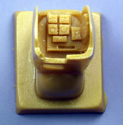
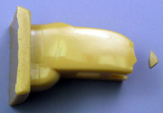
From aft of the cockpit to just ahead of the tail assembly the fuselage is a one-piece solid molding. The panel lines are light and disappear in a few places. The surface is smooth and mostly bubble free but there were a few trash globs here and there and I also found a couple sink marks. As can be seen the wings attach with just a butt joint so some sort of spar will need to be fabricated to give the joint some strength and to aid in alignment during assembly.
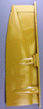
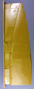
The wings are molded in one piece the topside shown at right has the nacelle fairings molded integral. There were a few surface globs but the main issue was the chunks missing from the trailing edge. The trailing edge is extremely thin which is probably correct but also very delicate and fixing it may be problematic. The bottom of the wing has marks molded in where the bottom nacelles get attached. Not only were chunks missing from the trailing edge but a section of the trailing edge along the aileron was dented. The web between the sprue block and the wing is thin so it should clean up fairly easily.
Bagged separately from the other parts were the lower nacelles, the engine cowlings the fuselage tail section, tail plane and rudders. The tailplane trail edge has missing chunks but there is a line just ahead of the broken out pieces which again is going to be problematic to fix due to the thin section. There is a little structure detail in the gear wells but it's minimal. The front of the engine cowlings has a grill look to it but the fan blade will cover it so it won't show much anyway. The worst issue to deal with here will be the sprue blocks on the nacelles. It is on the under side which mates with the wing and not only needs to be remove but will need to be shaped to fit the wing profile. That gives us 16 parts in tan resin.
Most of the rest of the resin details were contained in yet another bag. These include the main wheels, prop spinners and air intakes in white, the gear doors, torque scissors, cockpit parts, lower hatch, periscope and a couple parts I couldn't recognize in gray. The instructions lead you to believe there are left and right cockpit wall details but I could only find a piece for the right wall, so either the instructions are wrong or I got shorted. I'm not that big on cockpit details on 1/72 scale kits so I'm not going to loose any sleep over it. As can be seen some structural detail is molded into the inside of the gear doors, which is a nice detail. Also the seats have harness and belt detail molded in. This adds an additional 34 resin parts.
The metal parts, also bagged, include the prop blades, control column and yoke, tail wheel, access ladder if you want to pose the lower hatch open, DF antenna, gear struts and exhausts. Every thing is shown right out of the box. There was some flash and the surface of the prop blades has seams and some pits that will need work. A piece of stiff wire is need per the instructions to complete the landing gear assemblies and this is not supplied, at least not in my kit. A total of 34 metal parts.
The glazing is vacuformed, the demarcations for the frames could be better but I have seen worse, the plastic itself is not that clear and had a pebbly surface. Only one of each is supplied so hold your breath when doing these. That's 3 clear parts. The resin fans were taped to a piece of card and were packed with the glazing. They are relatively flash free, very finely rendered and survived the trip intact. That's four more resin parts bringing the total parts count to 90 parts.
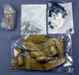
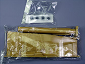
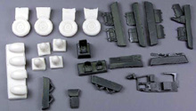
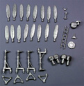
You may click on these small images to view larger pictures
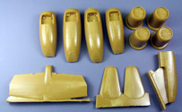
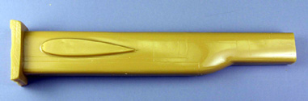
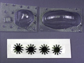
Instructions and Decals
The decals are basically just the national markings and two types of swastikas and the V markings. The aircraft never flew let alone made it to squadron level but squadron markings were supplied none the less for Luft 46 use I assume.
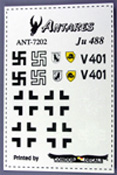
The instructions consist of four A4 size pages printed on one side. The first page has a brief history, some generic cleaning; prepping and assembly instructions for resin parts followed by part one of the assembly instructions. The balance of the five assembly steps are on the following pages and are made up of mostly sketches with a few notes. All very basic but it does show the location of all the parts on the assembly. There is a color guide for the cockpit as well as one for the finished product, which from my prospective is mostly speculative. One could be very creative here as with most Luft 46 aircraft.
Conclusions
From the looks of things this is going to be a laborious build. I was disappointed in the condition of the wing trailing edges and E-mailed Antaries to see if this was a molding problem or shipping damage but never got a response. The major parts seemed reasonably free of warping but getting everything cleaned and ready to assemble will take some time. It should make an interesting addition to the collection of die hard Luftwaffe fans that have a fair amount of resin kit experience.


{kind=link}
{kind=link}
{kind=link}
{kind=link}
{kind=link}
{kind=link}
{kind=link}
{kind=link}
{kind=link}
{kind=link}
{kind=link}
{kind=link}